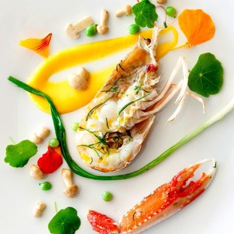

Jardim
Ingredientes da nossa horta e do mercado
Montanha
Plantas, flores, frutas e cogumelos selvagens colhidos da Floresta.

Mar
Peixes, mariscos e crustáceos dos pescadores mediterrâneos.
Seis meses após o Mirazur ser anunciado como o Melhor Restaurante do Mundo 2019. Mauro Colagreco compartilhou suas ideias, durante um jantar em Buenos Aires.
Chef do Mirazur em Menton, o melhor restaurante do mundo segundo o júri 50 Best, e premiado com 3 estrelas Michelin. Mauro Colagreco faz a sua receita simples de salada de primavera, exclusivamente para a Vogue Paris.
O Chefe Mauro Colagreco continua a transformar a sua gastronomia inspirando-se na observação da Natureza e no trabalho desenvolvido dentro dos seus jardins.
Movido pela Natureza, influências cósmicas e interações que afetam toda a sua vida, o Chefe procura oferecer um menu que proporciona uma viagem gastronómica para descobrir a essência e a força vital de cada dia de acordo com as variações do calendário biodinâmico.
Ingredientes da nossa horta e do mercado
Plantas, flores, frutas e cogumelos selvagens colhidos da Floresta.
Peixes, mariscos e crustáceos dos pescadores mediterrâneos.